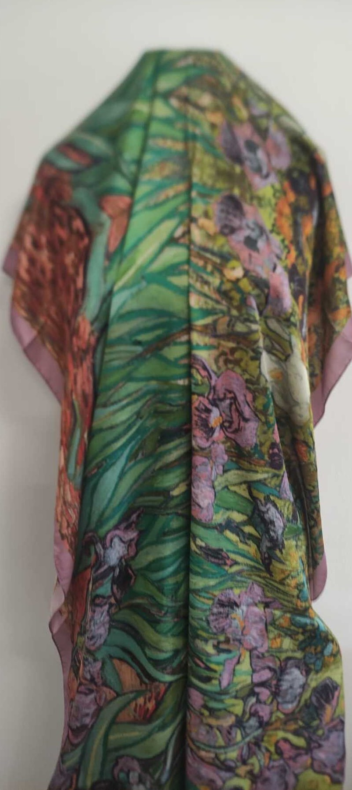
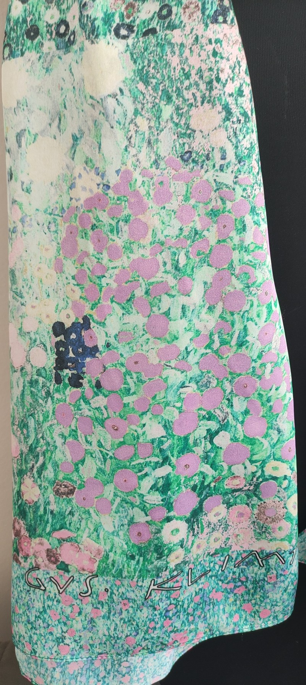
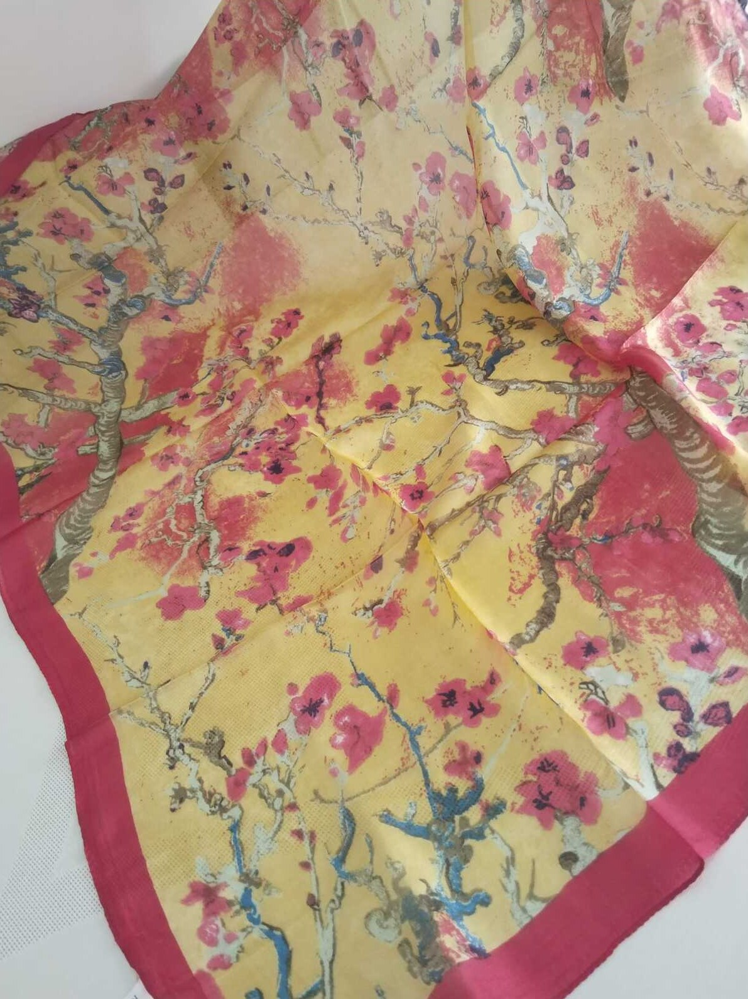

Zambak

Van Gogh Zambaklar İpek Şal 65×190
1.199 TL
Klimt

Klimt Çiçek Bahçesi İpek Şal 70×180
1.199 TL Son 1
Badem

Van Gogh Badem Ağacı İpek Şal 70×180
1.199 TL
Eşarp

Van Gogh Badem Çiçeği İpek Eşarp 95×95
1.099 TL Yeni